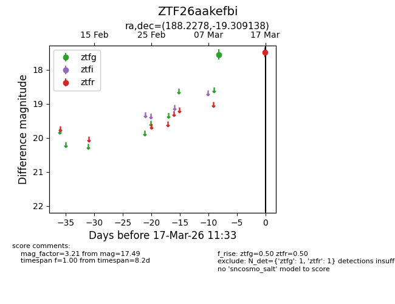
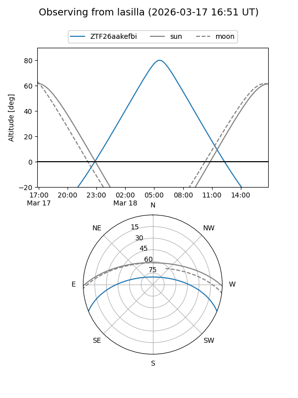
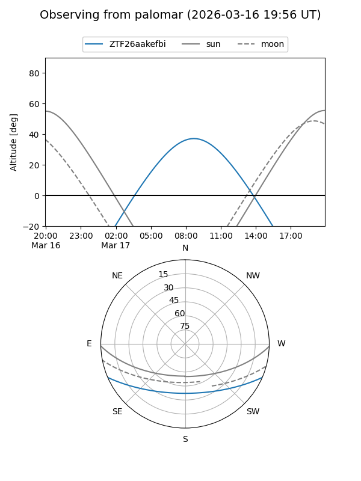

ZTF26aakefbi
Target ZTF26aakefbi at 2026-03-17 11:35
Aliases and brokers:
FINK: link
Lasair: link
ALeRCE: link
alt names
ZTF26aakefbi (ztf,fink_ztf)
Coordinates:
equatorial (ra, dec) = 188.2278,-19.30914
equatorial (HMS+DMS) = 12:32:54.67,-19:18:32.90
galactic (l, b) = (296.9167,+43.34612)
Flags:
Photometry:
last ztfg=17.55, ztfr=17.49
1 ztfg, 1 ztfr detections
Lightcurve

Visibility


Additional plots